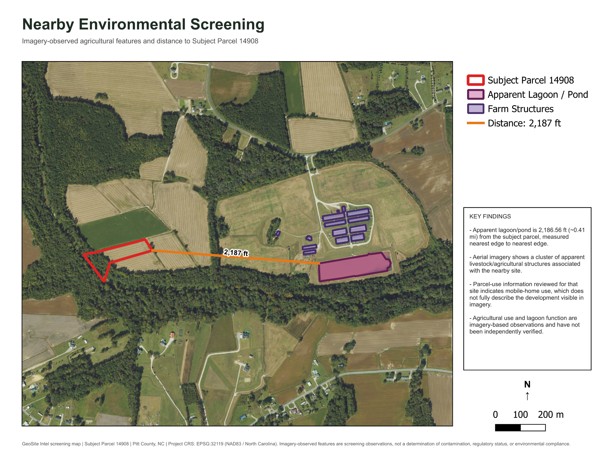
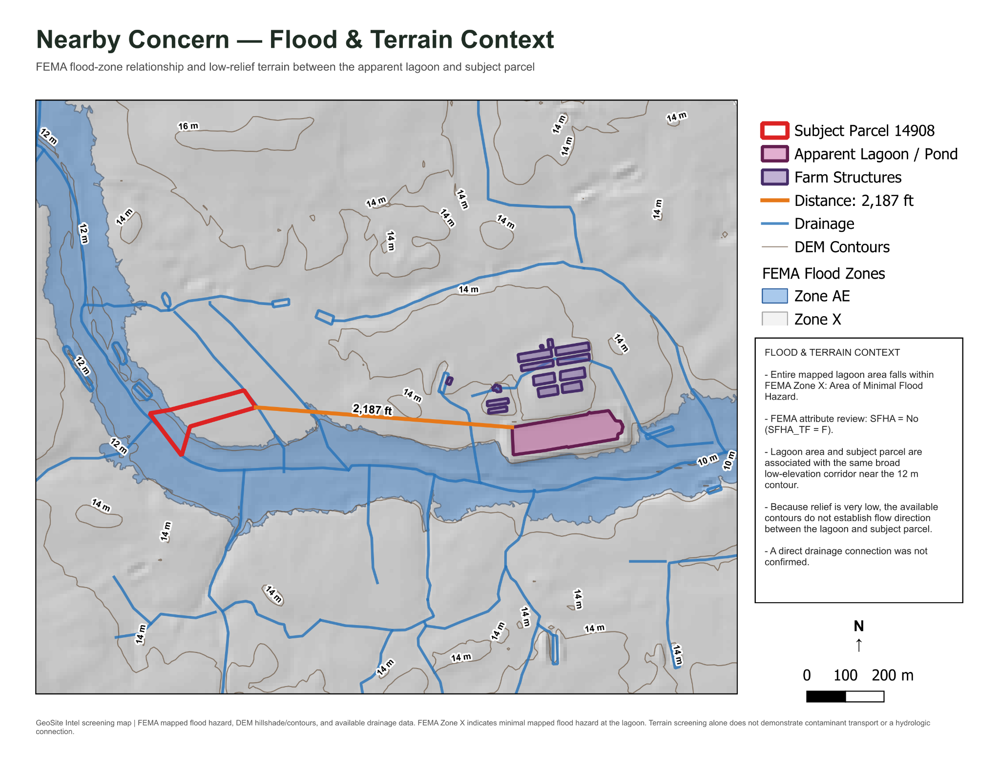

Property
Parcel & Existing Development
Parcel boundaries, road context, mapped structures, current imagery, and surrounding parcels were reviewed within a one-mile study area.
This demonstration shows how GeoSite Intel can move from scattered public records and map layers to a focused property research report. The review combines parcel context, current and historical imagery, mapped environmental conditions, terrain, drainage, access, surrounding land activity, and evidence-based follow-up questions.
The goal was not to create a generic stack of maps. Each dataset was used to answer a property question or identify something that deserved a closer look.
Parcel boundaries, road context, mapped structures, current imagery, and surrounding parcels were reviewed within a one-mile study area.
NWI wetlands, FEMA flood information, NRCS soil map units, and mapped drainage were compared with the subject parcel and nearby landscape.
Hillshade, contours, and available drainage mapping were used to understand the low-relief landscape and identify where the data could—and could not— support a flow-direction conclusion.
Available aerial imagery was reviewed across time to compare site conditions and provide context that parcel records alone do not show.
During the surrounding-property review, aerial imagery showed an apparent agricultural/livestock facility and an elongated pond or lagoon on a nearby site. The parcel-use information reviewed for that site did not fully describe what was visible in the imagery.

The apparent lagoon was digitized separately and measured at 2,186.56 feet (about 0.414 mile) from the nearest edge of the subject parcel.

The mapped lagoon area falls within FEMA Zone X, an Area of Minimal Flood Hazard. The terrain is very low relief, and a direct drainage connection to the subject parcel was not confirmed.
The finished deliverable combines the map package with plain-language interpretation, limitations, and recommended next questions so the work can support an actual property decision.
Executive summary, parcel context, current and historical imagery, environmental and terrain findings, nearby-site investigation, conclusions, sources, limitations, and follow-up considerations.
Findings are written to distinguish mapped or imagery-observed conditions from official determinations, field verification, engineering conclusions, or formal environmental assessments.
The PDF includes the complete map package, the investigative maps, written findings, sources, limitations, and recommended follow-up.